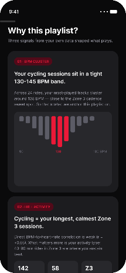
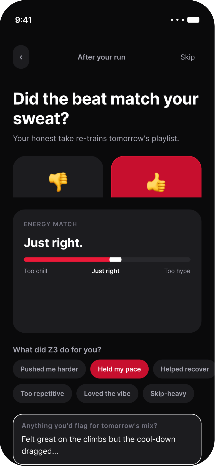
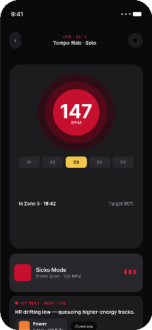
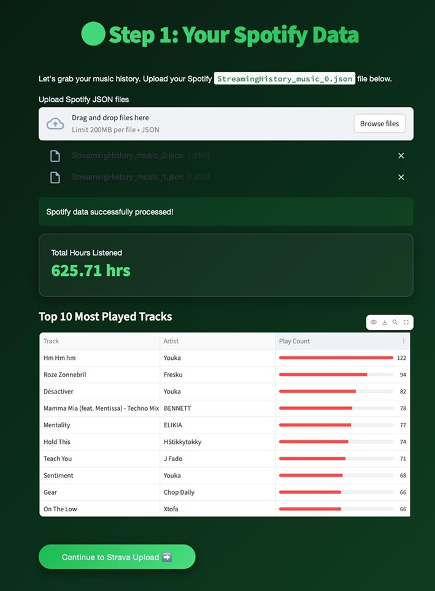
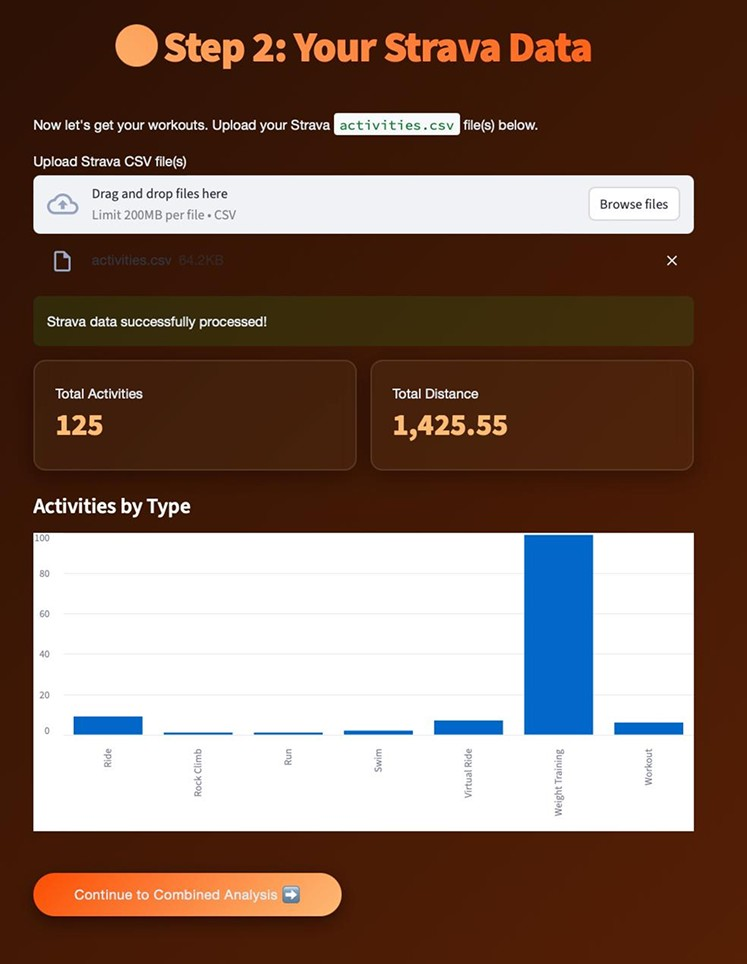
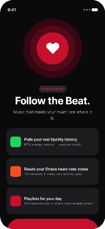
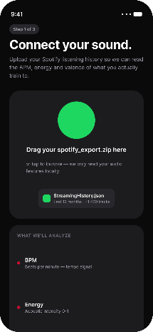
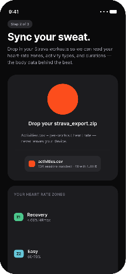
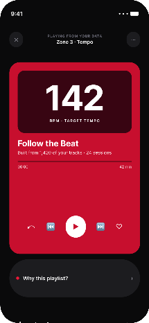

sync&sweat
A workout music recommender built on people's own Spotify, Strava and heart-rate data, taken from data collection and analysis to recommendation logic and a mobile prototype.
- My role
- Data analysis, recommendation logic, product design & prototype
- Context
- Data-Centric Design, TU Delft, 2026
- Team
- With Hao Lin and Sebastiaan Schulte
- Methods
- Data donation, correlation analysis, participatory data interviews



Summary
Workout music is rarely personal. Playlists don't know your training, your heart rate or how hard the session feels.
Track tempo barely tracked heart rate (r = +0.05 across 232 track–workout pairs). Music drove motivation instead.
From “control your heart rate” to matching music to your state and your own habits.
Follow the Beat: upload, state detection, recommendation, feedback, using zone playlists from your own library.
What I did
4 contributionsMulti-source data analysis
Built the Spotify + Strava collection flow and the dataset: time-series matching, cleaning, audio features and correlation analysis.
DataData-led strategy shift
Showed that tempo didn't track heart rate, combined that with interviews, and moved the goal from heart-rate control to state matching.
InsightRecommendation logic & prototype
Designed the zone + personal-history logic with BPM clustering, and the Follow the Beat mobile prototype.
LogicValidation & iteration
Ran participatory data interviews with each person's own charts, and turned what the data missed into the next model inputs.
Validation
PythonStreamlitPlotlyPandasSciPyVADERHTML/JSSpotify Web APIGitHub
Workout music knows your taste, but not your workout.
Streaming apps recommend by genre and mood. None of them look at the session itself: what you're doing, how hard your heart is working, how tired you feel.
We asked how a connected product could use people's own music and training data to suggest music that either pushes them into a higher heart-rate zone or helps them recover.
Two sub-questions guided the work: do heart-rate zones line up with the energy and valence of the music played, and do people choose high-energy music on purpose, or does music shift heart rate without them noticing?
How can a connected product create music suggestions that push a user into a higher heart-rate zone or guide them into recovery?
I built one dataset out of two personal histories.
Spotify knows what you played and when. Strava knows when you trained and how hard. Neither knows about the other, so every track had to be matched to the workout it was played in.
Participants exported their own data and uploaded it through a donation platform we built, where they could review everything before sharing it. Tracks were enriched with audio features from the Spotify API and aligned to workout windows by timestamp.
The dataset
After cleaning- 3Participants
People who donated their own Spotify listening history and Strava workout history.
- 13Workout sessions
Sessions with heart-rate data that could be analysed across the three participants.
- 232Track–workout pairs
Each pair is one song matched to the workout it was played in. This is the unit behind every correlation on this page.
- 49 / 112Matches with tempo data, first participant
Only 49 of the first participant's 112 matched tracks had a BPM value.
We didn't fill the 112 → 49 gap in. We asked the participant why it was there: he played music on the bike, but rarely in the gym. The gap was behaviour, not noise, and it pointed to activity type as something the model had to account for.
Donation platform
Participant side

Tempo didn't move heart rate, so I changed what the product aims for.
No meaningful link across all 232 track–workout pairs. Heart rate clustered by type of workout, not by the tempo of the music.

A small but consistent signal, in the same direction for every participant: faster tracks went with longer sessions. Tempo related to sustained effort, not peak heart rate.

Sometimes when I'm not that motivated, I try to find external motivation, either by working with someone else or by choosing my music.
Where the product belongs
Design principleTraining alone
Music is part of the workout. The system recommends.
Training with friends
Conversation replaces music, and the activity follows the group. The system steps back.
Strategy shift
Product goalControl heart rate: prescribe tempo to push people into a target zone.
State matching: music that fits the current session and the person's own training habits.
- InputActivity type
Asked every session, because it changes with who you train with.
- InputReal-time heart rate
Locates the zone you are in right now.
- InputMusic features
BPM, energy and valence of each track.
- InputYour Spotify library
Familiar tracks are the ones people actually keep playing.
Five heart-rate zones, filled with the tracks you actually train to.
- 1
Set a goal
Push, maintain or recover sets the target zone for the session.
- 2
Cluster by BPM
Every track from your workout history goes into one of five tempo bands.
- 3
Rank by habit
Within a band, tracks are ranked by how long you played them during workouts.
- 4
Play and explain
The zone playlist plays, with a “Why this playlist?” view one tap away.
Tempo bands
Track BPM per zoneWhen Spotify had no BPM for a track, the pipeline fell back to other sources (SongBPM, Deezer, then an estimate from genre) and kept the source visible, so a guessed tempo never looked like a measured one.

Follow the Beat, a mobile prototype that lived on participants' phones.
Built as a web app and added to the home screen, so it opened full-screen like a native app. All file parsing happened on the phone.
Upload State detection Recommendation Feedback
Watch it run
A screen recording on a participant's phone: connecting Spotify and Strava, starting a solo session, opening “Why this playlist?”, and rating the session afterwards.
- Set upConnect your sound, sync your sweat
- SessionLive zone and the zone playlist
- ReasoningWhy this playlist?
- AfterDid the beat match your sweat?
Set up
Three screens, one time. Your history becomes the baseline.



During the workout
Live zone, the music, and the reasoning behind it.

After the workout
One quick check-in closes the loop.
Tools behind it
Built in StreamlitData donation platform
Consent, upload, review and a first look at your own music–workout history. It also became the basis for the interviews.
Researcher dashboard
Cohort overview, music × heart rate, duration × effort, text sentiment (VADER), and a recommendation simulator for testing the logic before building it.
I used people's own data as the interview prompt.
Each participant saw their own BPM–heart-rate chart and their zone playlists, then took the playlists into their workouts on Spotify.
Instead of judging an abstract concept, they confirmed or contested patterns in their own data. We coded the interviews with reflexive thematic analysis.
Participants recognised most of the recommended tracks, but weren't sure the tracks would give them the same feeling mid-workout.
What the interviews showed
3 themes- Music is a motivational tool
Used to get into the right headspace, and shaped by the type of activity.
- Choice is habitual and mood-driven
Genre playlists picked by mood (techno, or “darker rap, more aggressive”), not matched to a zone.
- Audio features miss what matters
Lyrics, emotion and memories shape the experience, and BPM can't see any of them.
Maybe the song lyrics are very depressing, but you want something that pumps you up and also switches things up.
Next iteration
Model inputsLyric emotion and personal memories shape music choice, and audio features miss both.
Add emotion tags and a hype check-in before and after each session, and learn which tracks consistently motivate each person.
Exploratory study · 3 participants · 13 sessions · 232 track–workout pairs